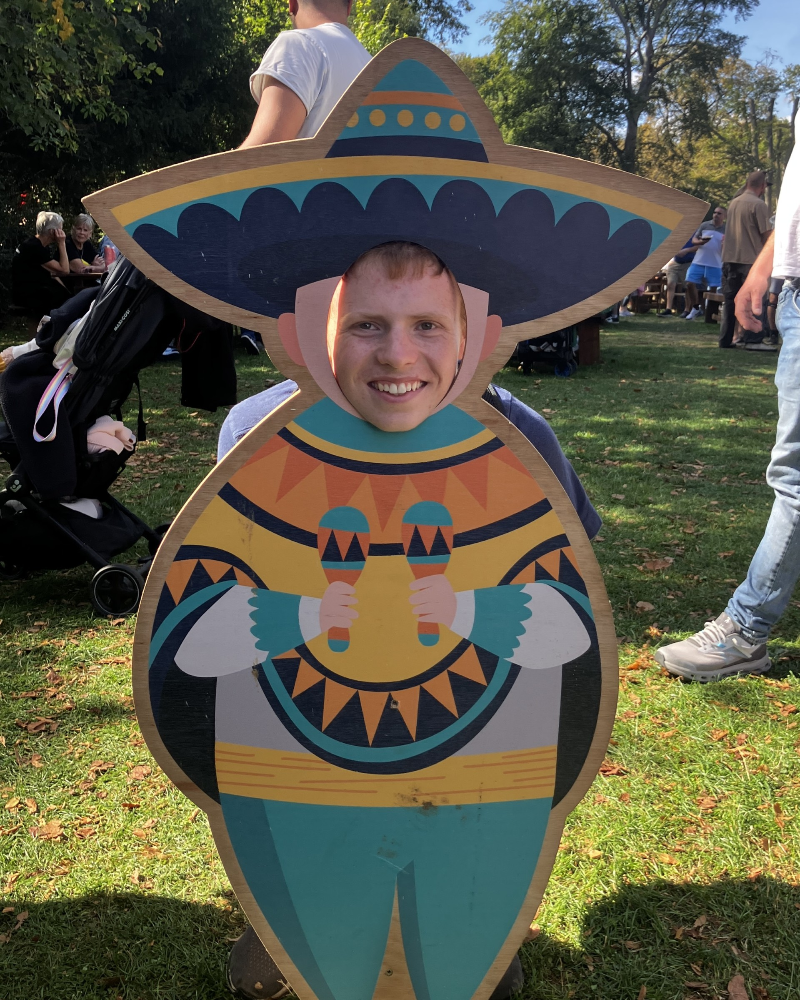

This website was created by James Marsden as an artefact for his Higher Project Qualification (HPQ)

I created this website to "test the effectiveness of a website to teach essential scouting skills to teenage children".
The idea for this website stemmed from my belief in the importance of these skills, and that they are never usually taught to people who are not members of Scouts.
I thought that if there was a central website to learn everything there is to learn in Scouts, then it would open up these skills to the wider public, of all ages.
I do realise that at this moment, the website is not "complete", however I believe that it provides an idea of what the website would look like when finished.
I have been a member of a Scout Group for most of my life, taking a break several years ago but returning as a Cub Young Leader two years ago.
I really enjoy volunteering there and helping teach scouting skills to the cubs, learning new things as I go.
I plan to continue helping there in the future, becoming an Adult Leader in a few years.